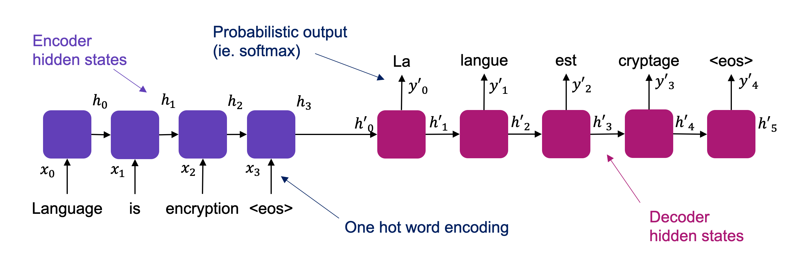
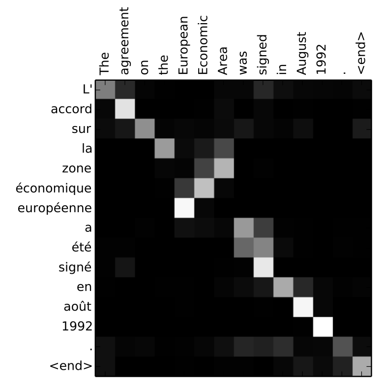
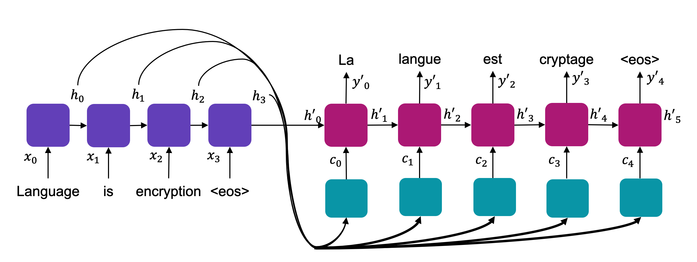
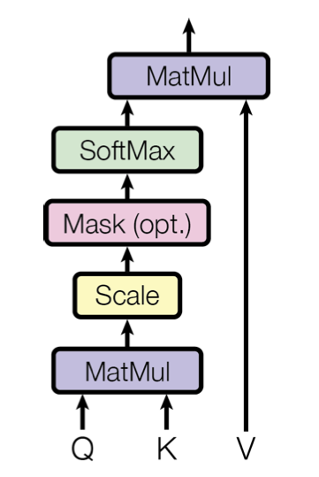
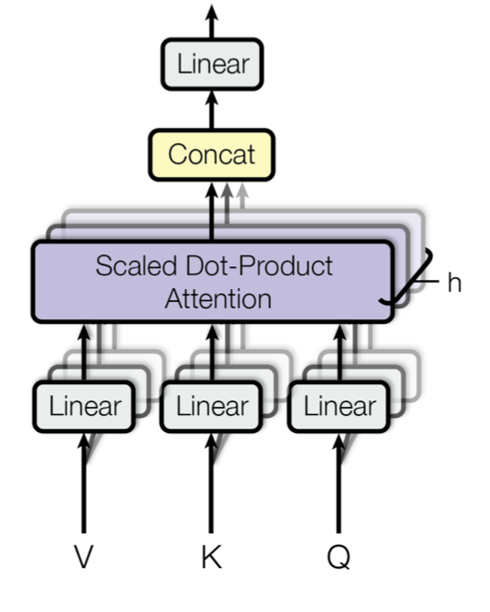
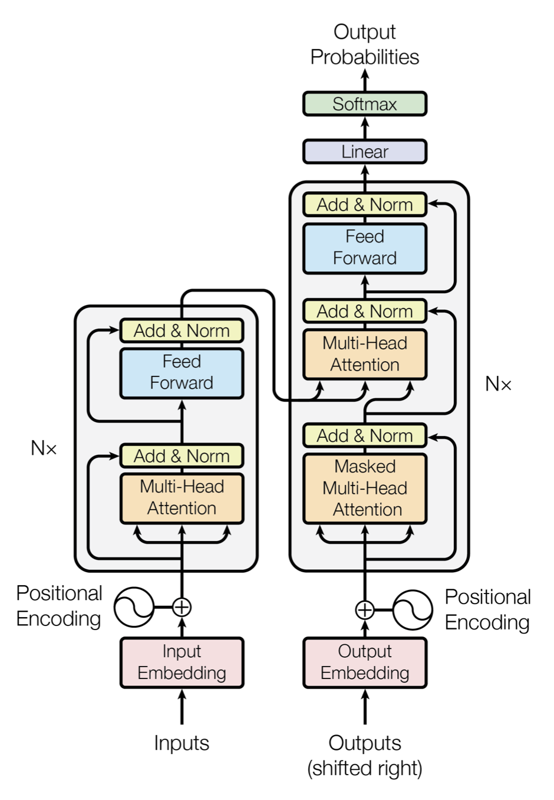

10 Transformers
The Transformer architecture has become the dominant architecture for processing sequential data, and is the underlying technology responsible for the boom in generative artificial intelligence during the early 2020s.
Prior to the invention of transformers, processing of sequential data relied on recurrent networks. Despite notable successes, such models suffered from several problems. These included the vanishing gradient and non-parallelisability mentioned previously, but also an inability to handle long range context. A key issue in translation models is identifying the relevant context, for a given output token, within the input sequence. Recurrent models have a tendency to attenuate context from earlier in the sequence, limiting the range over which it can be identified, and hence the length of sentences that can be translated.
Below we describe a successful recurrent model, followed by the key concept of “attention”, before going on to describe the Transformer itself.
10.1 seq2seq
The seq2seq model was a highly successful (for the time) recurrent model introduced in 2014 [1]. It uses a pair of LSTM networks, in an encoder/decoder architecture, reflecting a view of translation compatible with information theory type models of communication. Use of an end-of-sentence token <eos> allowed the encoder LSTM to convert an arbitrary length sequence into a fixed-size hidden vector. This vector effectively encodes the information contained in the sentence, which is passed to the decoder LSTM for converstion to another arbitrary length sentence (again using the <eos> token).
As for most language models of the time, the input sequence use a one-hot encoding over the input vocabulary. The network output is a softmax, ie. a probability distribution, over the output vocabulary. During training the output ground truth is encoded using a one-hot encoding, allowing a cross-entropy based loss to be calculated.

10.2 Attention
Attention is a mechanism for determining context in sequence processing. The general concept is that the importance of individual elements (or tokens) in a sequence is encoded in a set of “soft” weights, which are computed during the forward pass. Attention was originally proposed in the context of translation models [2]. For a given decoder hidden state, \(h'_t\), the mechanism aims to determine the importance of each input token, using the encoder hidden state \(h_i\). The original mechanism achieved this using a small neural network, which outputs a score \(e_{t,i}\) for each encoder hidden state. These scores can be converted to a probabilistic basis \(\varepsilon_{t,i}\) using softmax. An example of the attention (ie. the matrix \(\varepsilon_{t,i}\)) is shown in ?fig-attention-matrix.

{#fig-attention-matrix}The attention is used to compute a weighted sum over all the encoder hidden states, known as the context vector : \[c_t = \sum_i \varepsilon_{t,i} h_i\]
The context is computed for each output token and used as additional input to the decoder, as shown diagramatically in Figure 10.2.

10.2.1 Scaled Dot-product Attention
The original version of attention described above can be computationally quite expensive. Modern approaches to attention use a simplified version which is easier to compute, known as scaled dot-product attention. This approach also introduces an additional concept of storing the input sequence information as a series of \((key,value)\) pairs. This allows each input token (or corresponding hidden state) to be encoded in two ways - one which is optimised for efficient lookup/search, and another which is optimised for use in the context vector. The context vector is then computed using :
\(c_t = {\rm softmax}(\frac{Q_tK^T_i}{\sqrt{d_k}})V_i\)
where the query \(Q_t\) corresponds to the output token for step \(t\), and the input token for step \(i\) is encoded as the key \(K_i\) (for search), and the value \(V_i\) (for context information). The \(Q, K, V\) encodings are supplied by neural networks, allowing the optimal encodings to be learnt during training. The scaling by \(\sqrt(d_k)\), where \(d_k\) is the dimensionality of the input key \(K\), helps correct for reduced effectiveness of scaled dot product attention when \(d_k\) is a large value. The scaled dot production attention mechanism is shown diagramatically in Figure 10.3.

The Transformer architecture relies on multi-head attention, shown in Figure 10.4. Here, the attention mechanism is replicated several times, with unique \(Q, K, V\) encodings for each copy. This allows multiple context vectors to be computed, each of which encodes the relationship between elements in input and output sequences, on a unique basis. This reflects the different reasons why words in a sentence can have a relationship with each other.

10.3 Transformer Architecture
The transformer architecture was introduced in the landmark paper from Google Labs, “Attention is all you need” [3]. Essentially this approach replaced recurrence with ‘just’ attention. The absence of recurrence greatly increases the amount of computation that can be performed concurrently (ie. in parallel). This reduced the training time, and increased the complexity of network (or number of weights) that can be trained. It also means the position of tokens within the input sequence must be encoded at the input, so this information can be used by the network.
The Transformer architecture, shown in Figure 10.5 uses multi-head attention in two ways. The first is ‘self-attention’, which generates a context vector for the input sequence alone. Effectively this encodes the relationship of each element of the sequence to all the other elements. This self-attention mechanism is followed by a deep neural network, and the attention/DNN is repeated several times (6 in the original paper). The output of the stacked attention/DNN block is then sent to a second multi-head attention mechanism, which relates output tokens to input tokens in the same way as described in Section 10.2.
During training, the ground truth output sequence is also sent to a self-attention mechanism in the same way as the input sequence. The input (and ground truth output, during training) is encoded using a one hot encoding. A one hot encoding effectively means each token is represented by a vector of size of the vocabulary, with a 1 in the position of the word to that token. The output of the network is a softmax - effectively a probability distribution over the vocabulary. This allows a cross entropy based loss to be computed and used during training.
